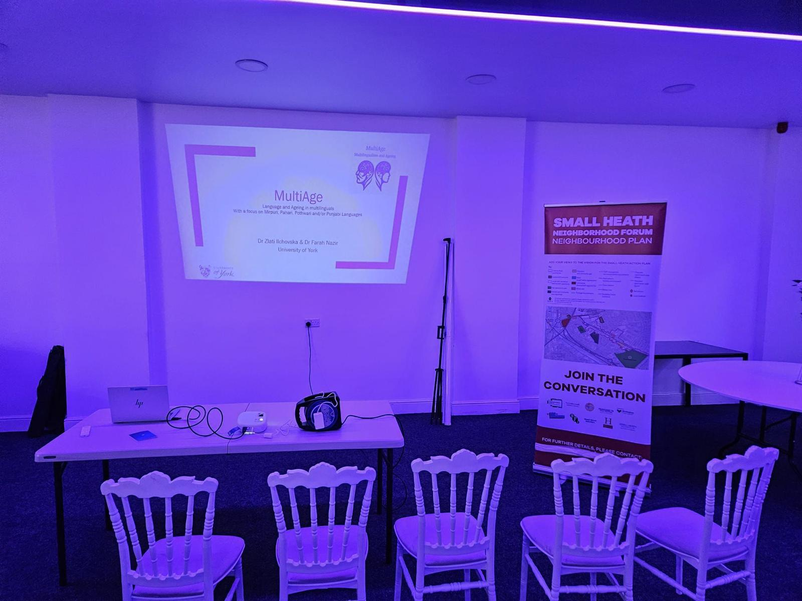
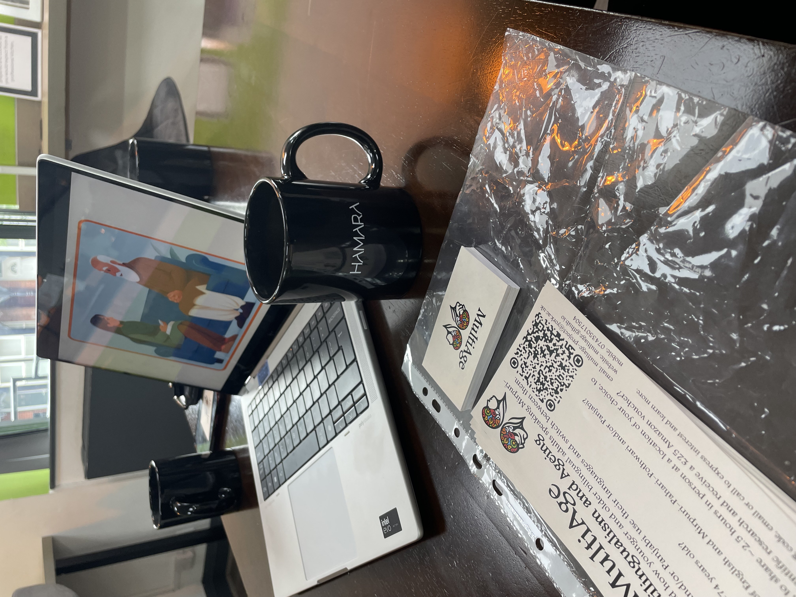

Activities and publications
Please keep an eye on this page for more upcoming community events and scientific publications!
When we have finished the studies, we will also publish a short report with the main findings on this page.
If you’d like to invite our team for a free visit or short talk at your community centre or organisation, please get in touch with us.
Public talks
January 2026: We visited the GAP SHAP group in Newcastle, where we spoke about multilingualism and ageing, and enjoyed a very welcoming and engaged discussion on the topic.
November 2025: We were invited to Small Heath’s Neighbourhood Planning event, Birmingham. We spoke about the importance of multilingualism in our community and neighbourhood, and how multilingual people’s cognitive and language abilities may change with age. We specifically addressed the importance of including multilinguals’ voices in the better scientific understanding of ageing and dementia.

November 2025: We gave a talk at Hamara Centre’s men’s
group, Sheffield. We discussed the meaning of multilingualism, the
status of South Asian languages in the UK, and how our brain changes -
including its language abilities - when we age.
October 2025: We gave a talk at Hamara Centre’s women’s
group, Sheffield. Here we discussed the nature of multilingualism in the
context of South Asian languages, how languages change across
generations, as well as language and ageing more broadly.

August 2025: Our team gave a talk at Longsight
Community Art Space, Manchester, for the Chai Kahni group for local men.
We spoke about language and ageing and presented an overview of the
MultiAge project.

May 2025: Dr Zlati Ilchovska presented a general-public
talk on bilingual brains’ potential, as part of the multinational
multi-city “Pint of Science” festival, York, UK. She talked about the
value of bilingualism and the benefits it can offer to us, while also
debunking a few popular myths about bilingualism!

Media
September 2025: Dr Farah Nazir and Dr Angela de Bruin
were invited as guests at Fever FM Radio to discuss the way language
changes with ageing and why there is little research on how this affects
bilingual speakers, especially of minority languages like
Pahari-Pothwari/Mirpuri and/or Panjabi. They also discussed topics such
as which language we think and feel in and how that changes from a
generation to another within a diaspora. Listen back here from 1:10:50
onwards using
this direct
link to the recording.

Conference presentations and posters
November 2025: Dr Angela de Bruin will be presenting a
research talk at the Psychonomic Society meeting, in Denver (USA). She
will be presenting research looking at the benefits of code switching,
specifically how multilinguals might use code switches to let the
listener know that unexpected information is coming up.
De Bruin, A., & Bennett, A. (2025, November). The influence of
code switching on the processing of unpredictable information. 66th
Meeting of the Psychonomic Society, Denver, USA.
Late September 2025: Dr Zlati Ilchovska presented
online a research talk at the Brazilian Seminar of Language and
Cognition, organised by the State University of Campinas. She spoke on
the topic of control during language switching. Additionally, she
presented the structure of the MultiAge project, some preliminary
findings of its first study, and talked about the role of the switching
context, in which bilinguals practice their two languages daily. You can
watch
the
recording of the Youtube stream, starting at 33:34.
Ilchovska, Z. G., Nazir, F., & de Bruin, A. (2025, September).
Language control with ageing in heritage language speakers: Cued and
voluntary language switching contexts. V Seminário Linguagem e
Cognição - InCognitus, Instituto de Estudos da Linguagem da Univ
ersidade Estadual de Campinas, Campinas, Brazil.
Early September 2025: Dr Zlati Ilchovska presented a
research poster with preliminary findings at the very large conference
of the European Society for Cognitive Psychology (ESCoP), held at the
University of Sheffield. The poster enjoyed a lot of attention and
sparked the interest of a variety of researchers in bilingualism,
multilingualism, ageing and minority languages!
Ilchovska, Z. G., Nazir, F., & de Bruin, A. (2025, September).
Language control with ageing in heritage language speakers: Cued and
voluntary language switching contexts. 24th biennial conference of
the European Society for Cognitive Psychology (ESCoP), Sheffield City,
UK

June 2025: Dr Angela de Bruin presented a research
poster on a preliminary study looking at how multilingual language
choice is influenced by the language choices of your conversation
partner. This poster was presented at one of the largest conferences on
multilingualism worldwide - the International Symposium on Bilingualism,
in Donostia-San Sebastián, Spain.
de Bruin, A., Sequiera, A., & Grace, E. (2025, June). Language
choice alignment in bilingual speakers. International Symposium on
Bilingualism, Donostia-San Sebastián, Spain.
November 2024: Dr Angela de Bruin presented a talk on a
research project looking at the way multilinguals’ language production
is influenced by short exposure to other multilinguals. This talk was
given at one of the largest conferences on experimental psychology
worldwide (Psychonomic Society), in New York City (USA).
de Bruin, A., Wang, J., Daryanani, R., & Coumel, M. (2024,
November). Bilingual language switching during production: the
impact of exposure to another bilingual’s switching patterns. 65th
Meeting of the Psychonomic Society, New York City, USA.
Accepted publications
de Bruin, A., Wang, J., Daryanani, R., & Coumel, M. (2025). Language
switching during production: The influence of preceding exposure to
other bilinguals in different switching contexts. Memory &
Cognition, 1-22.